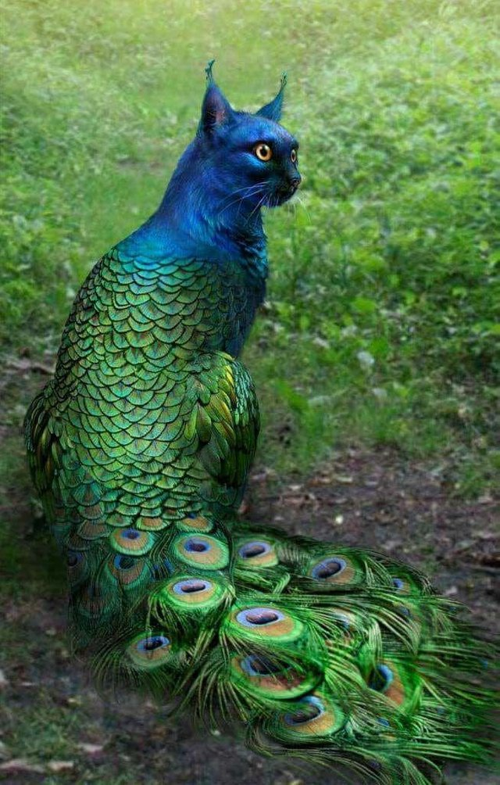

sudo service httpd status
A GET command will retrieve the specified data from the server, POST adds it to the server, and HEAD retrieves metadata.
ServerRoot contains the files for the server. DocumentRoot contains the files for the webpages that are sent through the server
The default value is Port 80.
/var/www/html/index.html (the document root)
the config file specifies an {APACHE_LOG_DIR} that stores all the logs. The tail command is used to access the last few lines of a file.
A directory index file is one that is specified to display when a user tries to look in a specific directory, and this is useful to offer the user a default page.
A VirtualHost block needs to be added to ports.conf.
A password-protected file needs to have an htpasswd file and that must be referenced in the htaccess file which establishes requirements to access that directory.
Automatic redirection requires us to find the 404 error contingency and have it refer to a file of our choice.
This is the peacat, the new mascot of Team Corrupt Disk
